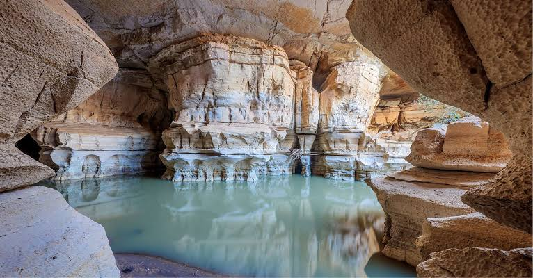

Sof Omar Cave is one of the most famous natural caves in Ethiopia. It is located in the Bale Zone of Oromia Region. The cave was formed naturally by the Weyib River over many years.
The cave is known for its beautiful rock formations, underground river, and long dark tunnels. Many local and international tourists visit the cave every year to enjoy its natural beauty and history.
Sof Omar Cave is also an important cultural and religious place. The peaceful environment, fresh air, and amazing views make it one of the best tourist destinations in Ethiopia.